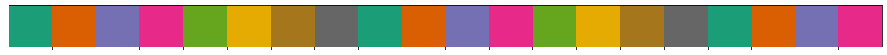
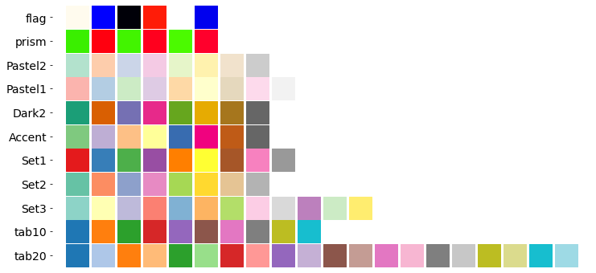
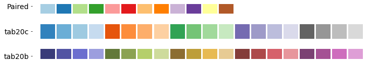
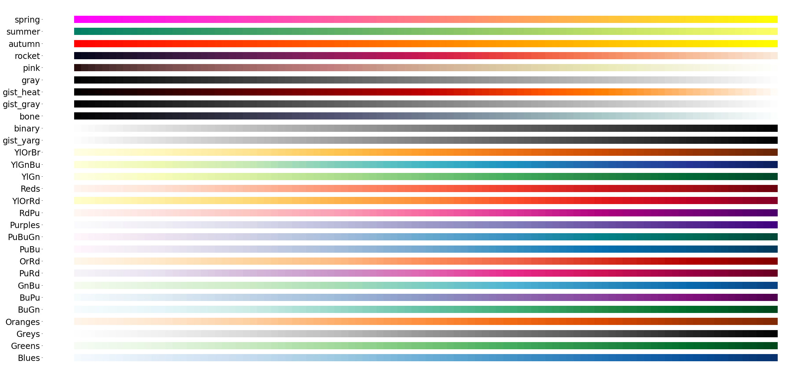
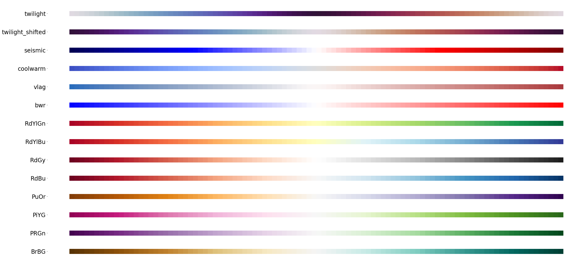
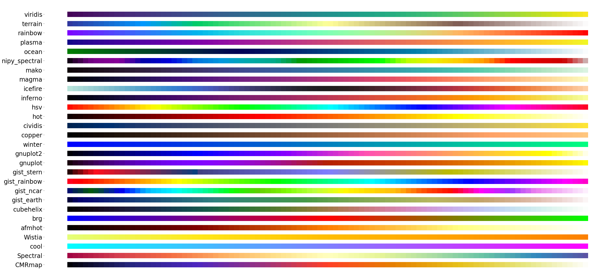
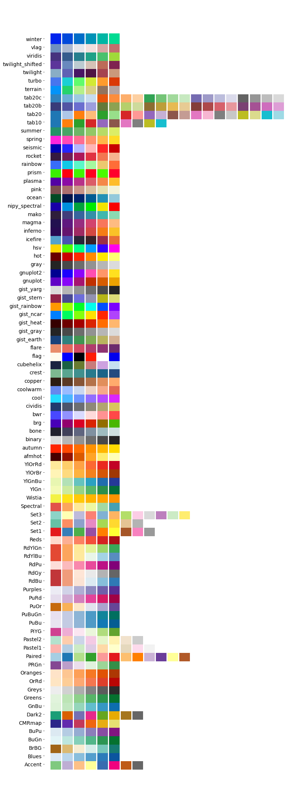

Colors and Palettes¶
import matplotlib.pyplot as plt
import seaborn as sns
import pandas as pd
import time
# set the font of figure so the text can be edit in Adobe Illustrator
import matplotlib as mpl
mpl.rcParams['font.serif'] = 'Arial'
mpl.rcParams['pdf.fonttype'] = 42
def plot_palettes_panel(palettes_panel, height, n_colors=None,width=12,size=800,yticks_size=14):
if n_colors:
palettes = pd.DataFrame(data=[
sns.color_palette(palette, n_colors).as_hex()
for palette in palettes_panel
],
index=palettes_panel)
else:
palettes = pd.DataFrame(data=[
sns.color_palette(palette).as_hex() for palette in palettes_panel
],
index=palettes_panel)
palettes = palettes.fillna('#FFFFFF')
f, ax = plt.subplots(figsize=(width, height))
for y in palettes.index:
for x in range(len(palettes.columns)):
ax.scatter(x=x, y=[y], c=palettes.loc[y, x], s=size, marker='s')
ax.spines['top'].set_visible(False)
ax.spines['bottom'].set_visible(False)
ax.spines['right'].set_visible(False)
ax.spines['left'].set_visible(False)
ax.get_xaxis().set_visible(False)
ax.yaxis.set_tick_params(labelsize=yticks_size)
All built-in palettes in Matplotlib¶
all_palettes = list(filter(lambda x: False if x.endswith('_r') else True, sorted(mpl.cm.cmap_d.keys())))
all_palettes.remove('jet')
/Users/jianhua/anaconda3/envs/jb-book/lib/python3.8/_collections_abc.py:702: MatplotlibDeprecationWarning: The global colormaps dictionary is no longer considered public API.
return len(self._mapping)
/Users/jianhua/anaconda3/envs/jb-book/lib/python3.8/_collections_abc.py:720: MatplotlibDeprecationWarning: The global colormaps dictionary is no longer considered public API.
yield from self._mapping
sns.palplot(sns.color_palette('Dark2',20))

Discrete Palettes¶
discrete_palettes = ['tab20','tab10','Set3','Set2','Set1','Accent','Dark2','Pastel1','Pastel2','prism','flag']
plot_palettes_panel(discrete_palettes,6)

Grouped Palettes¶
grouped_palettes = ['tab20b','tab20c','Paired']
plot_palettes_panel(grouped_palettes,2)

Shade Palettes¶
shade_palettes_oneway = [
'Blues', 'Greens', 'Greys', 'Oranges', 'BuGn', 'BuPu', 'GnBu', 'PuRd',
'OrRd', 'PuBu', 'PuBuGn', 'Purples', 'RdPu', 'YlOrRd', 'Reds', 'YlGn',
'YlGnBu', 'YlOrBr', 'gist_yarg', 'binary', 'bone', 'gist_gray',
'gist_heat', 'gray', 'pink', 'rocket', 'autumn', 'summer', 'spring'
]
shade_palettes_twoway = [
'BrBG', 'PRGn', 'PiYG', 'PuOr', 'RdBu', 'RdGy', 'RdYlBu', 'RdYlGn', 'bwr',
'vlag', 'coolwarm', 'seismic', 'twilight_shifted', 'twilight'
]
shade_palettes_rainbow = [
'CMRmap', 'Spectral', 'cool', 'Wistia', 'afmhot', 'brg', 'cubehelix',
'gist_earth', 'gist_ncar', 'gist_rainbow', 'gist_stern', 'gnuplot',
'gnuplot2', 'winter', 'copper', 'cividis', 'hot', 'hsv', 'inferno',
'icefire', 'magma', 'mako', 'nipy_spectral', 'ocean', 'plasma', 'rainbow',
'terrain', 'viridis'
]
One-way palettes¶
plot_palettes_panel(shade_palettes_oneway,20,100,40,400,24)

Both-way palettes¶
plot_palettes_panel(shade_palettes_twoway,20,100,40,400,24)

Rainbow¶
plot_palettes_panel(shade_palettes_rainbow,20,100,40,400,24)

All built-in palettes in Matplotlib¶
plot_palettes_panel(all_palettes,40)
